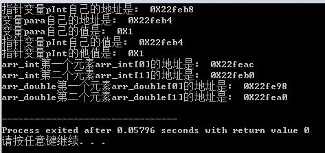
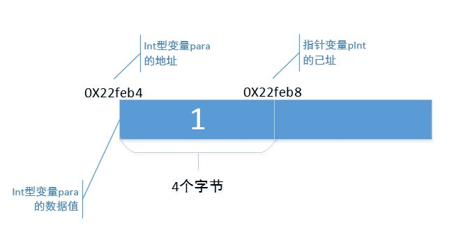
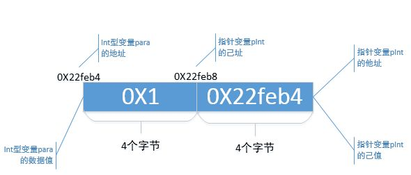
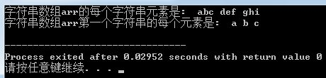

En este artículo, resumo las dimensiones de los punteros con cuatro palabras: 'dos propios y tres ajenos'. ¿No suena nada fluido ni rima, verdad? Qué cosa. Estos 'dos propios y tres ajenos', en detalle, son: dirección propia, valor propio, valor ajeno, dirección ajena y tipo ajeno.
Creo que podemos hablar de los punteros desde estas 5 dimensiones. Pero antes de hablar, he escrito un programa que incluye las dimensiones 'dos propios y tres ajenos' del puntero, y luego explicaré una por una el significado de cada dimensión. A ver si es así.
En la mayoría de los escenarios de uso de punteros, estas 5 dimensiones deberían ser suficientes para ayudarte a entender. Sin embargo, en algunos escenarios especiales de uso de punteros, el método de las 5 dimensiones puede no ayudarte.
Advertencia: artículo largo a continuación. Si te impacientas, puedes guardar este artículo y seguir leyéndolo cuando tengas tiempo.
1. Código del programa
1.1. Código
Ejemplo
El resultado de la ejecución es el siguiente:

Cuando explico algunas cosas que entiendo en mis propios artículos, me gusta mucho usar programas muy simples para aclararlas. Así que aquellos que piensen que hay que usar programas incomprensibles para explicar, o los expertos que desprecian los programas de bajo nivel, por favor ignórenme ^_^.
2.2. Variable para de tipo int
En el programa:
int para = 1;
printf("变量para自己的地址是: 0X%x\n", ¶);
printf("变量para自己的值是: 0X%x\n", para);
Se define la variable para, que tiene su propio valor de datos y su propia dirección de almacenamiento, todo esto es fácil de entender. Según el resultado de ejecución, el valor de datos propio de la variable para es '0X1' en hexadecimal, y su dirección es '0X22feb4' en hexadecimal. En otras palabras, en la memoria, el espacio de almacenamiento que comienza en la dirección '0X22feb4' tiene 4 bytes que almacenan un valor de datos '0X1'. En mi máquina, una variable de tipo int ocupa 4 bytes; en la tuya puede ser diferente.
Respecto a la variable para de tipo int, todos lo entienden bien. A continuación, dibujaré un diagrama esquemático para indicar cómo se almacena la variable para en la memoria, como sigue:

A continuación, empecemos a hablar sobre el concepto de 'dos propios y tres ajenos'.
2. Dos propios y tres ajenos
'Dos propios y tres ajenos', en detalle, son: dirección propia, valor propio, valor ajeno, dirección ajena y tipo ajeno.
2.1. Dirección propia
2.1.1 Concepto de 'dirección propia'
'Dirección propia' es la abreviatura de 'la dirección de uno mismo'. El puntero pInt, como variable, igual que la variable para de tipo int, también necesita almacenarse en un espacio de almacenamiento en la memoria; este espacio también tiene una dirección de inicio, es decir, la variable puntero pInt también tiene su propia dirección. Arriba se dijo que la dirección de la variable para es '0X22feb4'; entonces, ¿cuál es la dirección de la variable puntero pInt?
2.1.2 Obtención de la 'dirección propia'
Todos hemos aprendido que '&' es un operador de obtención de dirección. En el programa:
printf("指针变量pInt自己的地址是: 0X%x\n", &pInt);
Es decir, se usa '&' para obtener la dirección de la variable puntero pInt. Según el resultado de ejecución, la dirección de la variable puntero pInt es '0X22feb8'. En mi máquina, la variable puntero pInt también ocupa 4 bytes; por lo tanto, la variable puntero pInt se almacena en el espacio de 4 bytes que comienza en la dirección '0X22feb8'.
2.1.3 Escritura en código de la 'dirección propia'
En el código, la forma común de representar la 'dirección propia' de la variable puntero pInt es:
&pInt;
Ahora, vamos a completar ese diagrama esquemático, añadiendo la 'dirección propia' de la variable puntero pInt, para señalar cómo se almacena la variable puntero pInt en la memoria.

'Dirección propia' significa exactamente esto. ¿Ves? ¡No es especialmente difícil!
2.2 Valor propio
2.2.1 Concepto de 'valor propio'
'Valor propio' es la abreviatura de 'el valor de datos de uno mismo'. El puntero pInt, como variable, igual que la variable para, también tiene su propio valor de datos.
2.2.2 Obtención del 'valor propio'
Arriba se mencionó que el valor de datos propio de la variable para es '1'; entonces, ¿cuál es el valor de datos propio de la variable puntero pInt? En el programa:
pInt = ¶
printf("指针变量pInt自己的值是: 0X%x\n", pInt);
Mediante el operador '&', asigné el valor de dirección de la variable para a la variable puntero pInt, y usé printf para imprimir el valor de datos de la variable puntero pInt. Según el resultado de ejecución, el valor de datos propio de la variable puntero pInt es '0X22feb4'. Si observamos de nuevo, la dirección de la variable para también es '0X22feb4', por lo tanto,
pInt = ¶
La esencia de esta sentencia es dar la dirección de la variable para al valor propio de la variable puntero pInt, vinculando así la variable puntero pInt con la variable para.
En 'dirección propia' se mencionó que el valor de datos del puntero pInt se almacena en la memoria que comienza en la dirección '0X22feb8', ocupando 4 bytes; es decir, en la memoria que comienza en '0X22feb8', los 4 bytes siguientes se usan todos para almacenar un valor de datos '0X22feb4'.
2.2.3 Escritura en código del 'valor propio'
En el código, las formas comunes de representar el 'valor propio' de la variable puntero pInt son:
pInt;
También hay una forma de escritura en código como:
pInt + N; pInt - N;
Esta forma de escritura significa usar el 'valor propio' de pInt más un número N o menos un número N; esto se mencionará cuando se hable del atributo 'tipo ajeno'. También hay otra forma de escritura:
pIntA - pIntB;
Esta forma de escritura representa la resta usando los 'valores propios' de dos variables puntero.
2.2.4 Diagrama esquemático
Ahora, sigamos completando el diagrama esquemático anterior, añadiendo el valor propio de la variable puntero pInt.

Por lo tanto, en general, el 'valor propio' para la variable puntero pInt es su propio valor de datos; para otras variables de tipo int, es su dirección.
2.3 Dirección ajena
2.3.1 Concepto de 'dirección ajena'
El concepto de 'dirección ajena' es precisamente el significado de 'la dirección de otros'. De hecho, cuando se mencionó el valor propio arriba, ya se había mencionado de manera no tan explícita el concepto de 'dirección ajena'.
2.3.2 Obtención de la 'dirección ajena'
La variable entera para se almacena en los 4 bytes que comienzan en la dirección de memoria '0X22feb4'. En el programa, yo, mediante
pInt = ¶
Le doy la dirección de la variable para a la variable puntero pInt, vinculando así la variable puntero pInt con la variable para. Dicho de manera más esencial, es asignar la 'dirección de otros' al 'valor propio' de la variable puntero pInt. Aquí, el 'otros' de 'dirección de otros' se refiere a la variable para, y la 'dirección' de 'dirección de otros' se refiere a la dirección de la variable para. Nota: como puedes ver, 'dirección ajena' y 'valor propio' son iguales en cuanto al valor de datos. Entonces, ¿has comprendido algo?
Lo que muchos libros de texto llaman 'un puntero es una variable de dirección que almacena la dirección de otras variables', en palabras claras, está diciendo que el valor de datos de la dimensión 'dirección ajena' es igual al valor de datos de la dimensión 'valor propio'; solo que los libros de texto no lo dicen tan explícitamente.
2.3.3 Diagrama esquemático
Completemos de nuevo ese diagrama esquemático, esta vez añadiendo el concepto de 'dirección ajena'.

2.4 Valor ajeno
2.4.1 Concepto de 'valor ajeno'
'Valor ajeno' significa 'el valor de datos de otros'.
2.4.2 Obtención del 'valor ajeno'
En el programa, yo, mediante
pInt = ¶
Le doy la dirección de la variable para al 'valor propio' de la variable puntero pInt, vinculando así la variable puntero pInt con la variable para. En este momento, el 'otros' de 'el valor de datos de otros' se refiere a la variable para, y el 'valor de datos' de 'el valor de datos de otros' se refiere al valor de datos '1' de la variable para. En el programa, yo, mediante
printf("指针变量pInt的他值是: 0X%x\n", *pInt);
: ¿y esto? En realidad es *(pInt + 1).
2.4.3 Sintaxis de código para el "valor ajeno"
Esas notaciones que ves a menudo en el código, como *pInt, ¿qué significan? ¡En realidad están calculando el "valor ajeno" del puntero pInt!
¿Y estas notaciones: *(pInt + 1), *pInt + 1, pInt
*(pInt + 1): si consideramos pInt + 1 como otro puntero, por ejemplo
int *pTemp = pInt + 1；
entonces *(pInt + 1) calcula, en esencia, el "valor ajeno" del puntero pTemp;
*pInt + 1: esto es sumar 1 al "valor ajeno" de pInt;
pInt
2.4.4 Diagrama esquemático
Sigamos perfeccionando el diagrama anterior; esta vez incorporamos el concepto de "valor ajeno":

2.5 Tipo ajeno
2.5.1 Concepto de "tipo ajeno"
"Tipo ajeno" es la abreviatura de "el tipo de otro". En el programa, vemos que al declarar el puntero pInt se escribe así:
int *pInt = NULL;
El " int " delante del puntero pInt no significa que el "valor propio" de pInt sea un dato de tipo int; sino que el "valor ajeno" de pInt es un dato de tipo " int ". Aquí, el "valor ajeno" de pInt es el valor de la variable para, "0X1"; por lo tanto, el "int" delante de pInt indica que el valor "0X1" es de tipo "int".
En resumen: el tipo al declarar un puntero se usa para calificar el "valor ajeno", no el "valor propio".
Fíjate también en la declaración de la variable para:
int para = 1;
El "int" delante de la variable para indica que el tipo de para es entero; en este caso, el "int" es para para un "tipo propio", es decir, "su propio tipo". Solo el tipo en la declaración de un puntero es "tipo ajeno", es decir, "el tipo de otro".
Ya que el "tipo ajeno" sirve para calificar el "valor ajeno", entonces, ¿qué sentido tiene añadir este "tipo ajeno" al declarar un puntero? ¡Sigue leyendo!
En el programa, el siguiente fragmento de código:
int arr_int[2] = {1, 2};
pInt = arr_int;
printf("arr_int第一个元素arr_int[0]的地址是: 0X%x\n", pInt);
printf("arr_int第二个元素arr_int[1]的地址是: 0X%x\n", pInt + 1);
Asigné la dirección de un array de enteros arr_int al puntero pInt; entonces la "dirección propia" de pInt no cambia, sigue siendo 0X22feb8, pero su "valor propio" sí ha cambiado.
Antes, el "valor propio" de pInt era "0X22feb4", es decir, la dirección de la variable para; ahora se ha convertido en "0X22feac", que es la dirección del primer elemento del array arr_int. Es decir, la "dirección propia" de pInt no cambia, pero su "valor propio" sí puede cambiarse.
Ahora veamos la diferencia entre "pInt" y "pInt + 1"; aquí se está operando con el "valor propio" de pInt. Según el resultado de ejecución, el "valor propio" de pInt es ahora "0X22feac", mientras que el "valor propio" de pInt + 1 es "0X22feb0". ¿Lo has notado? Ambos difieren exactamente en 4 bytes, y un dato de tipo "int" también ocupa exactamente 4 bytes.
Podrías pensar que, ya que pInt + 1 suma 1 al "valor propio", debería ser "0X22feac + 1" = "0X22fead". ¿Por qué no es así? Es obra del "tipo ajeno" del puntero pInt.
El significado de "tipo ajeno", en palabras llanas, es: "Oye, amigo pInt, tu valor ajeno es un dato de tipo int; de ahora en adelante, si usas tu valor propio +1, +2, o -1, -2, no seas tonto y sumes o restes literalmente 1 byte, 2 bytes, o restes 1 byte, 2 bytes. El tipo int ocupa 4 bytes, así que debes tomar 4 bytes como una unidad, y sumar 1 * 4 bytes, 2 * 4 bytes, o restar 1 * 4 bytes, 2 * 4 bytes, ¿entiendes? Ah, por cierto, la N en pInt + N puede ser positiva o negativa".
Claro, si en tu máquina un dato de tipo "int" ocupa 8 bytes, entonces pInt + 1 suma 8 bytes al "valor propio", y pInt + 2 suma 8 * 2 = 16 bytes al "valor propio". Eso es lo que significa.
En el programa puse otro ejemplo para ilustrar este "tipo ajeno". El programa es el siguiente:
double *pDouble = NULL;
double arr_double[2] = {1.1, 2.2};
pDouble = arr_double;
printf("arr_double第一个元素arr_double[0]的地址是: 0X%x\n", pDouble);
printf("arr_double第二个元素arr_double[1]的地址是: 0X%x\n", pDouble + 1);
Esta vez se declara un puntero pDouble; su "tipo ajeno" es "double", su "valor propio" es la dirección del array arr_double, y su "valor ajeno" es el valor del elemento arr_double
3. Resumen
Es hora de resumir.
Declaro un puntero:
type *pType = NULL;
pType tiene 5 dimensiones, que son:
pType = (dirección propia, valor propio, dirección ajena, valor ajeno, tipo ajeno);
3.1 Dirección propia: es decir, 'la dirección de uno mismo'
El puntero pType, como variable, también tiene su propia dirección; la forma habitual de escribirlo en código es "&pType".
La dirección propia no se usa con frecuencia en programas típicos; si se necesita, se involucra el "puntero a puntero", que es otro tema; no se discute en este artículo.
3.2 Valor propio: es decir, 'el valor de datos de uno mismo'
El puntero pType, como variable, también tiene su propio valor de datos; en código se escribe "pType".
También se pueden hacer sumas y restas sobre el valor propio; las formas comunes son "pType + N", "pType - N", "pType2 - pType1", etc.
3.3 Dirección ajena: es decir, 'la dirección de otros'
El valor propio de pType, además de representar su propio valor de datos, también representa la dirección de la variable de tipo "type" vinculada a pType. En general, el "valor propio" y la "dirección ajena" de pType son iguales en valor.
La forma habitual de vincular una variable de tipo type con pType es: pType = &variable;
3.4 Valor ajeno: es decir, 'el valor de datos de otros'
Una vez que la variable de tipo type está vinculada a pType, el puntero pType puede obtener el valor de la variable de tipo type mediante ciertas notaciones, es decir, el "valor ajeno". Las notaciones habituales son: "*pType", "pType->", etc.
Y estas notaciones: "*(pType + N)", "*(pType - N)", "pType[N]" también obtienen el "valor ajeno", pero hay que aclarar algo especial:
pType + N puedes verlo como:
type *pTemp = pType + N;
"*(pType + N)" en realidad calcula el "valor ajeno" del puntero pTemp.
"*(pType - N)" ya lo entiendes fácilmente.
"pType[N]" es en realidad "*(pType + N)", memorízalo sin más.
3.5 Tipo ajeno: es decir, 'el tipo de otros'
Al declarar el puntero pType, el "type" delante no se usa para calificar el "valor propio" de pType, sino el "valor ajeno". Es decir, "type" no significa que el "valor propio" de pType sea un dato de tipo type, sino que el "valor ajeno" de pType es un dato de tipo type.
El papel del "tipo ajeno" en el código es principalmente que, al calcular "pType + N" y "pType - N", pType debe sumar o restar (N * sizeof(type)) bytes.
Los punteros siempre marean; probablemente te mareas por una o varias de estas 5 dimensiones. Si entiendes bien estas 5 dimensiones, el puntero es solo un tigre de papel.
4. Explicación de ejercicios
Después de explicar las 5 dimensiones, no puede faltar algo de práctica. A continuación se enumeran varios ejercicios, todos relacionados con punteros, que dejan a los principiantes mareados y fuera de combate. Voy a interpretar estos ejercicios con estas 5 dimensiones; ¡mira si te resultan más fáciles!
4.1 Suma de elementos de un array
4.1.1 Programa
El primer ejemplo es un programa muy común: calcular la suma de los elementos de un array. El programa es el siguiente:
Ejemplo
El programa es muy simple: primero imprime todos los elementos del array, luego calcula la suma de todos los elementos. El resultado de ejecución es el siguiente:

4.1.2 Interpretación de "dos propios y tres ajenos"
4.1.2.1 Imprimir los elementos del array
Al imprimir los elementos del array, el código es el siguiente:
pArr = arr;
printf("%d ", pArr[index]);
Esta línea de código equivale a
pArr = arr;
printf("%d ", *( pArr + index));
Aquí se usan el "valor propio" y el "tipo ajeno" para hacer la suma, y se usa el "valor ajeno" para obtener los elementos del array.
"Valor propio": el código primero asigna el valor de datos del nombre del array arr al "valor propio" de pArr. Y ¿cuál es el valor de datos del nombre del array arr? Es la dirección del elemento arr
;
int *pTemp = pArr + index;
;
"Tipo ajeno": el tipo ajeno de pArr es "int". Sobre la base del valor propio de pArr, ¿cuántos bytes se suman? Si el tipo ajeno de pArr es int, entonces pArr + index, ¿no significa que el valor propio de pArr se suma con index * sizeof(int) bytes?
pArr: se puede escribir como pArr + 0, es decir, sumar 0 * 4 = 0 bytes; en este momento, el valor propio de pTemp es la dirección de arr
pArr + 1: es sumar 1 * 4 = 4 bytes; en este momento, el valor propio de pTemp es la dirección de arr
pArr + 2: es sumar 2 * 4 = 8 bytes; en este momento, el valor propio de pTemp es la dirección de arr
Así, pArr + index recorre las direcciones de todos los elementos del array.
Notarás que el valor propio de pTemp está cambiando constantemente; el valor propio y la dirección propia de pArr permanecen sin cambios.
"Valor ajeno": dado que pArr + index puede recorrer las direcciones de todos los elementos del array, al usar *(pArr + index), es decir *pTemp, ¿no se puede obtener el valor ajeno de pTemp? Así también se recorre el valor de todos los elementos del array.
4.1.2.2 Suma de los elementos de un array
Para calcular la suma de los elementos de un array, el código utilizado es el siguiente:
sum = sum + *(pArr + index);
Según el análisis que hice antes sobre la salida de los elementos del array, ¡ya está claro cómo funciona pArr en este código!
pArr + index sigue utilizando el valor propio de pArr para realizar la suma, obteniendo el valor propio de un puntero temporal pTemp; este valor propio de pTemp es la dirección de cada elemento del array;
Luego se usa *(pArr + index), es decir *pTemp, para obtener el valor ajeno del puntero temporal pTemp, que es el valor de cada elemento.
Finalmente, se suman todos los valores ajenos de pTemp para calcular la suma de los elementos del array.
4.1.2.3 Resumen
¡Intenten usar las dimensiones de "dos propios y tres ajenos" para comprender notaciones comunes como pArr, pArr + index, *(pArr + index), pArr[index], *pArr + index, etc.!
4.2 Array de punteros
Un array de punteros es algo que combina punteros y arrays; para los amigos principiantes puede ser difícil de entender. El array de punteros es un tema bastante amplio; para los conceptos relacionados, consulte los libros de texto generales de C. Aquí solo uso el concepto de "dos propios y tres ajenos" para explicar los conceptos de punteros en el programa.
4.2.1 Programa
Para el array de punteros, pongo un ejemplo a continuación:
Ejemplo
El resultado de la ejecución es el siguiente:

4.2.2 Interpretación con "dos propios y tres ajenos"
4.2.2.1 Salida de todas las cadenas
Primero veamos la definición del array de punteros:
char *arr[3] = {"abc", "def", "ghi"};
Lo que ves es que cada elemento de este array parece una cadena, pero en realidad, en esencia es así:
char *pChar1 = "abc", *pChar2 = "def", *pChar3 = "ghi";
char *arr[3] = {pChar1, pChar2, pChar3};
Cada elemento del array arr es en realidad un puntero cuyo "tipo ajeno" es "char".
arr
printf("%s ", arr[0]);
En esencia es:
printf("%s ", pChar1);
Usando el valor propio o la dirección ajena de pChar1, comenzando desde la dirección del carácter 'a', se generan uno a uno los siguientes 'b' y 'c'.
Para pChar2 y pChar3 se entiende de la misma manera.
4.2.2.2 Salida de cada carácter de la primera cadena "abc"
El código es el siguiente:
char *pArr = arr[0];
printf("%c ", *(pArr + index) );
Se asigna arr
pArr + index consiste en sumar al valor propio de pArr index * sizeof(char) bytes, resultando en un puntero temporal pTemp:
char *pTemp = pArr + index;
El valor propio o dirección ajena del puntero pTemp será sucesivamente la dirección de los caracteres 'a', 'b', 'c'; es decir, el valor ajeno de pTemp también será sucesivamente los caracteres 'a', 'b', 'c'. Así, el puntero pTemp recorrerá sucesivamente cada carácter de la cadena "abc".
4.3 Lista enlazada
Las listas enlazadas son donde se usan punteros con más frecuencia; operaciones como insertar nodos, eliminar nodos, etc., se encuentran con escrituras de código como la siguiente:
p2 = p1->next; p1->next = p3->next; ......
¿Qué demonios es esto? ¡Estoy mareadísimo! Este puntero next, aquel puntero next, saltando de un lado a otro; vaya, tengo la cabeza llena de pasta. Jeje, ¡aquí viene el método de análisis de punteros en 5 dimensiones! Sin embargo, sobre las listas enlazadas, creo que es mejor dedicar otro artículo. Cuando termine de explicar las listas enlazadas, volveré a explicar estos punteros next. Te digo, la esencia de las listas enlazadas no es más que eso; una vez que lo entiendes, las listas enlazadas son incluso más un tigre de papel que los punteros.
Autor: El pez de la familia Shi
Fuente: https://zhuanlan.zhihu.com/p/27974028